你好，我是史睿康
全栈新媒体人 / 摄影师 / AI探索者
就读于西北大学网络与新媒体专业。拥有在 Momenta、极氪汽车 等知名企业的市场与公关实习经验。 擅长将创意视觉与数据化运营相结合，同时熟练运用 AI 工具 进行全栈开发与内容创作。
3000w+
项目曝光
3
段核心实习
AI+
技能树
专业技能
摄影与影视制作
- 熟练使用索尼、佳能、电影机及无人机航拍
- 精通 DaVinci Resolve, PR, AE, 剪映进行后期制作
- 具备导演思维，熟悉上市路演视频及广告策划全流程
品牌公关与运营
- 熟悉紧急舆情处理流程，撰写专业分析报告
- 双微一抖、B站、知乎多平台生态构建
- 具备私域流量池构建及线索转化实战经验
AI工具与开发
- 熟练使用 Cursor, Gemini 独立开发网页与APP
- 利用生成式AI进行图文、音频创作辅助
- HTML5, CSS3, JavaScript, GitHub Pages部署
实习经历
Momenta
2025.10 - 至今
Marketing & PR Intern
- 线上运营：独立负责多平台品牌营销，发布稿件100+，提升行业影响力。
- KOC/KOL生态：从0到1孵化十余个高质量KOC账号，构建私域流量池。
- 大型活动：参与WICV及广州车展策划，全网曝光超3000万。
极氪汽车 (ZEEKR)
2025.02 - 2025.07
市场实习生
- 用户增长：制定城市端策略，新增注册用户8万+，线索3万+。
- 活动执行：统筹20余场线下活动，单日最高获客5000+。
陕西省电视台
2024.01 - 2024.04
摄影记者
独立完成新闻采编、专题报道策划，作品多次被新媒体转载。
精选作品
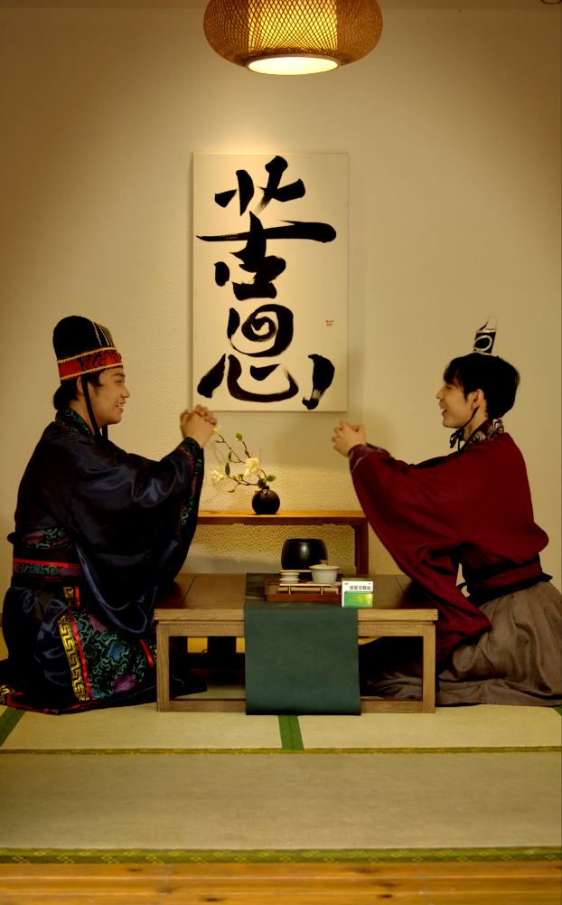
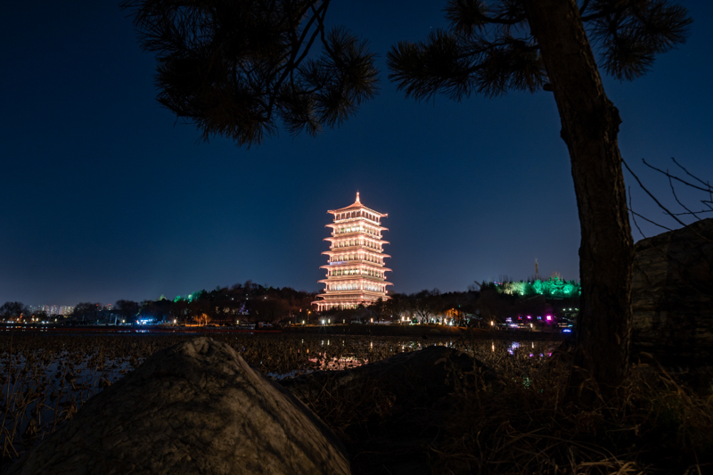
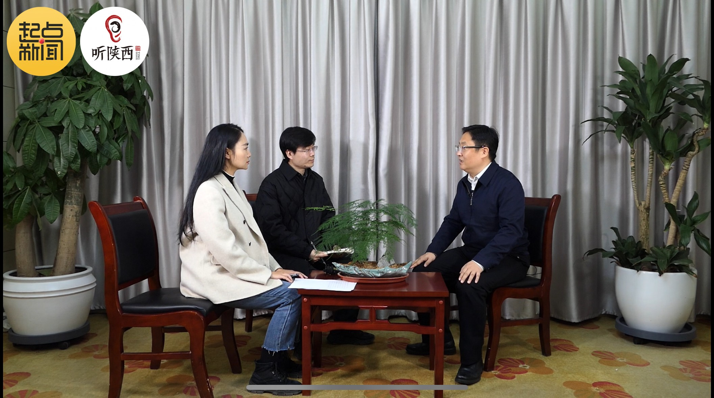
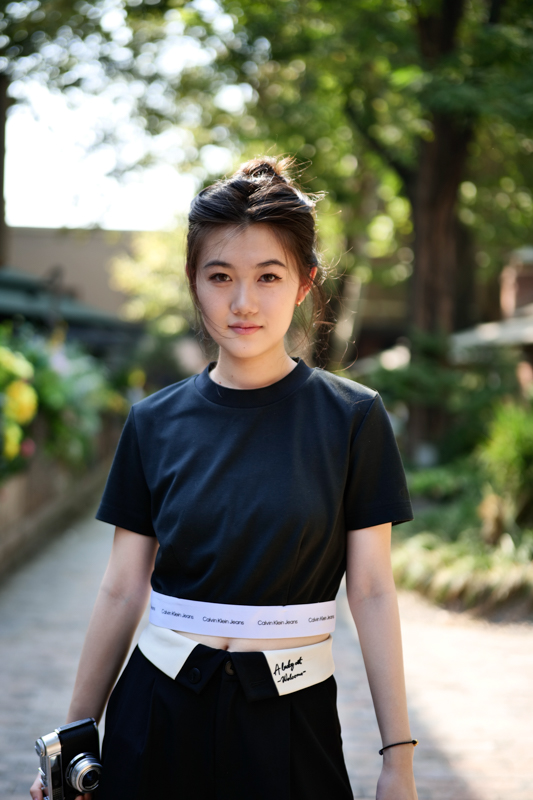
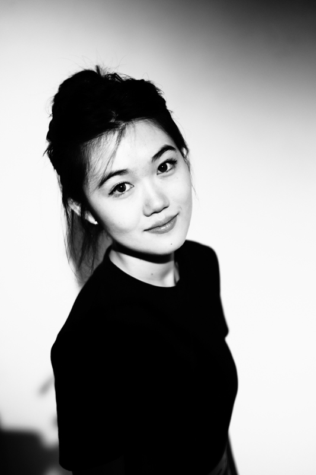
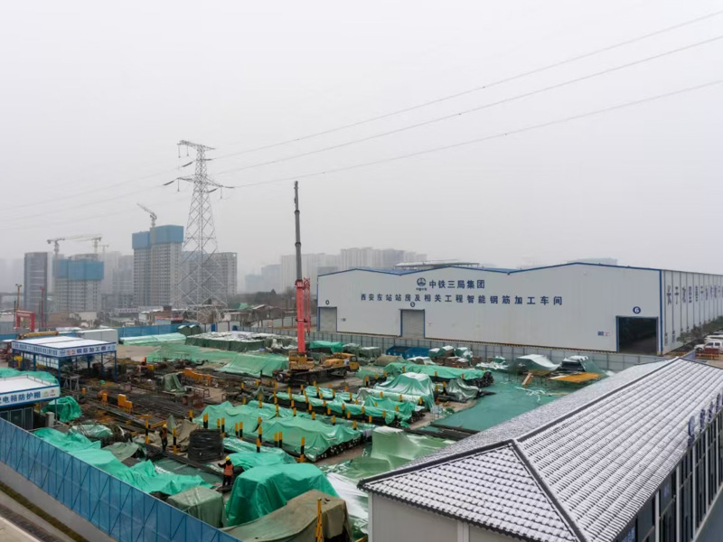
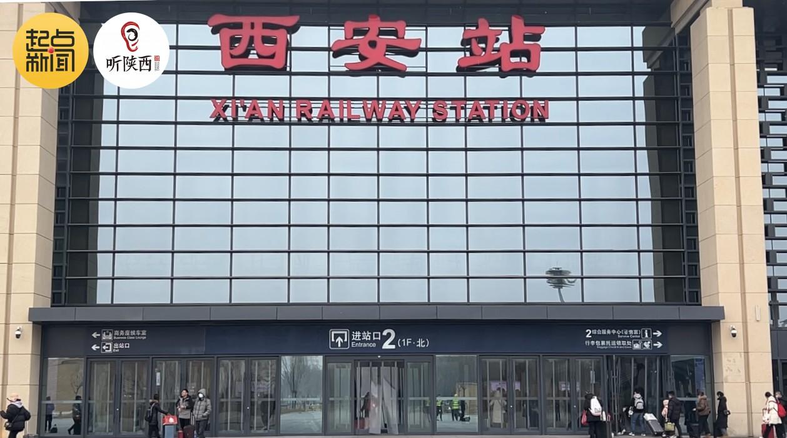
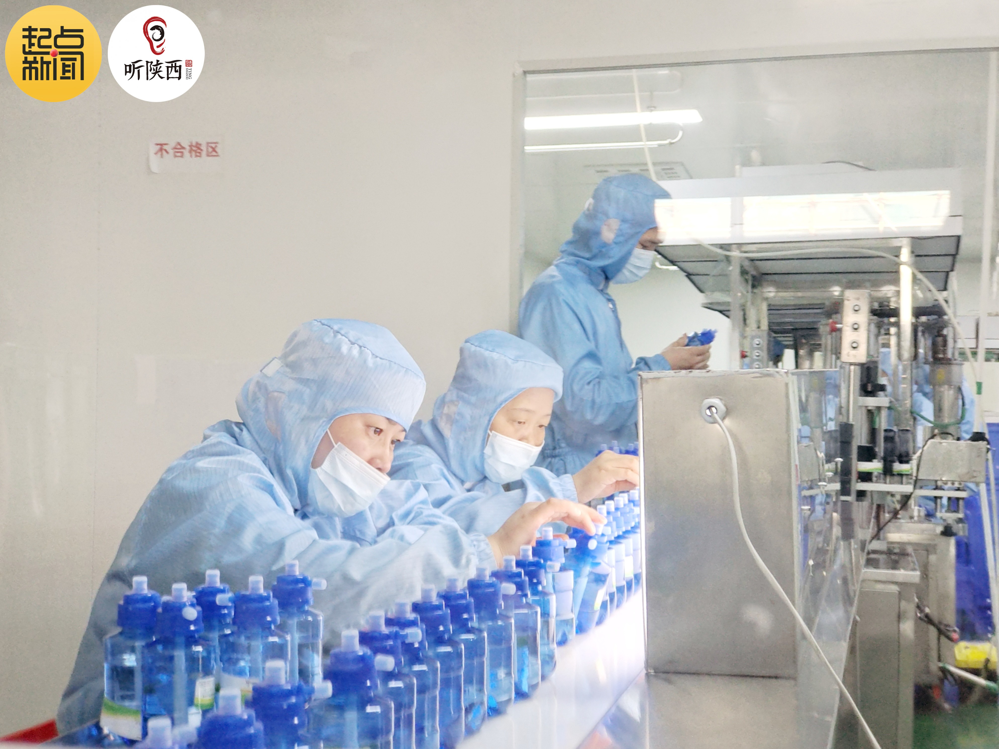
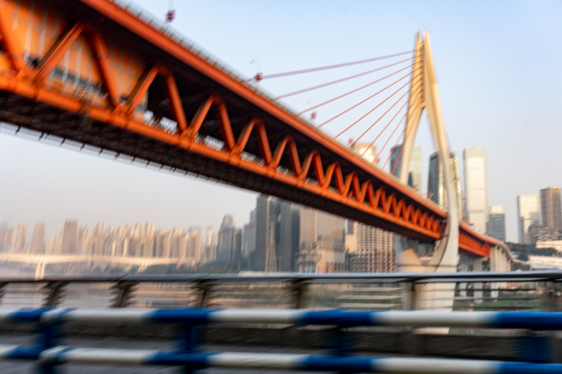
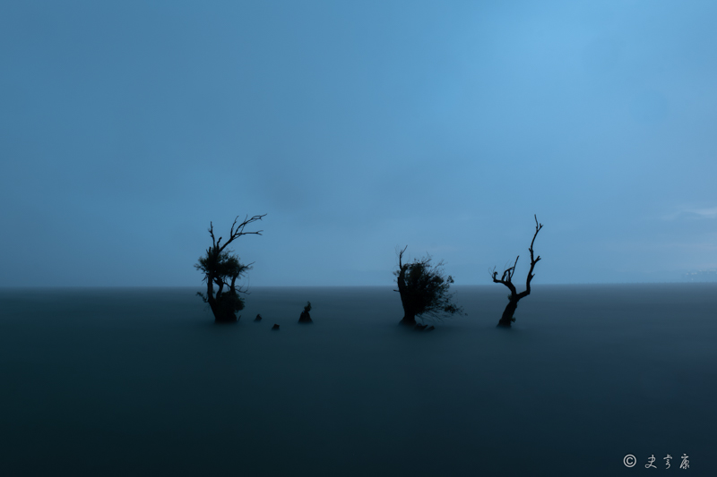
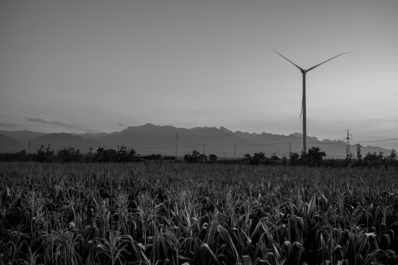
联系方式
×

社交媒体
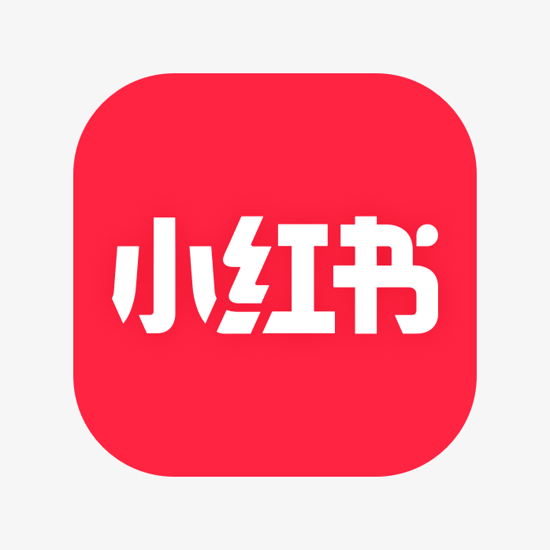
小红书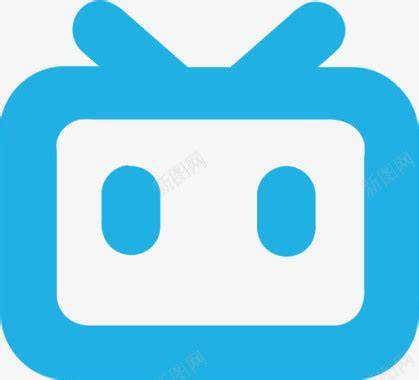
哔哩哔哩